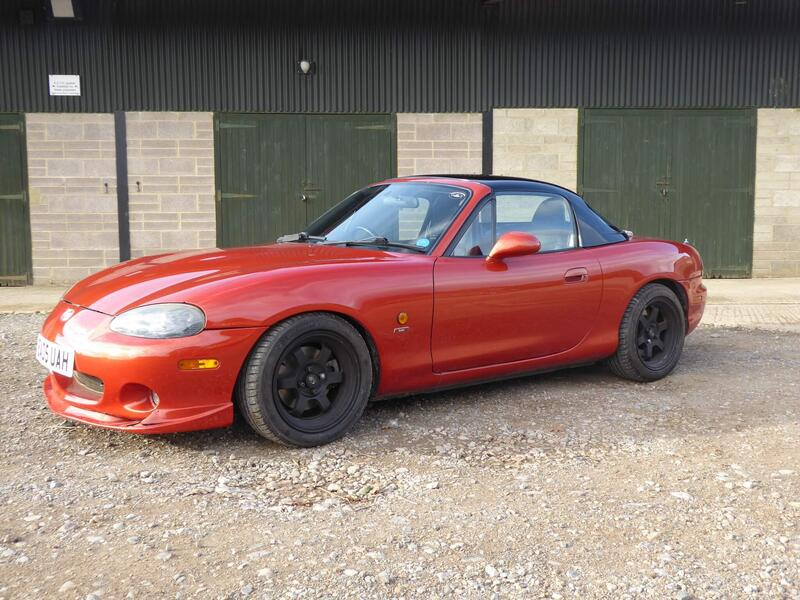
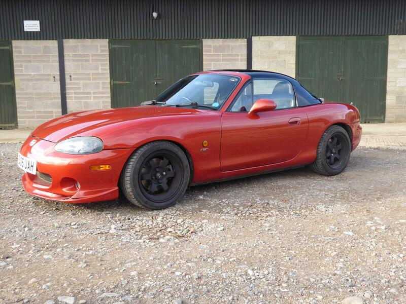
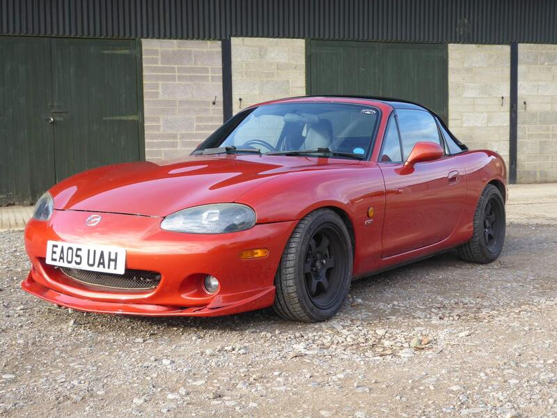
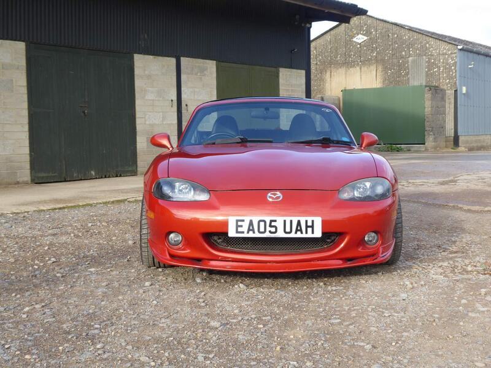

Seller photos from the AutoTrader ad.
2005 MX-5 1.8 Icon
Nicely specced, but £5,500 is top money.
Key facts
| Price | £5,500 |
|---|---|
| Year | 2005 |
| Miles | 58,484 |
| Variant | 1.8 Icon |
| Edition | Icon |
| Engine | 1.8 |
| Colour | Orange |
| Registration | 2005 (05 reg) |
| Owners | 6 owners |
| Service history | Full |
| Seller | Private seller |
| Location | Marlborough |
| From Poole | ~60 mi (estimate) |
| Source | AutoTrader, checked 12 Oct 2026 |
Why buy it
- Chilli Orange Icon edition, full service history
- Heated seats (search result)
Things to check
- Several modifications
Several modifications (ad), starting with a K&N cold air intake
- Mk2.5 weak spots
Sills, rear arches and chassis rails for rust, the hood seams, and when the cambelt was last changed.
Seller says (extract)
“For sale is my Chilli Orange 2005 Mazda MX5 Icon Edition. 58484 miles. The car is in excellent running condition and has a full comprehensive service history, including original dealer documentation. Over the years I have owned this car, It has had numerous modifications including: K&N Cold air intake Mx5parts Stainless Steel exhaust 4x MeisterR Coilovers Cobra rear strut brace 4x New Rota Alloys. 2 New front brake disks and new offside front caliper, this rectified the common issue of the front brakes on these cars seizing. The car is also being sold with the "Brilliant Black" Hard top pictured in the photos, underneath this the soft top is in excellent condition and was freshly treated and dried before being folded away. I have retained the original parts for everything I have modified, and can include these in the purchase if you so wish - this will allow you to return the car to stock if you prefer this.…”